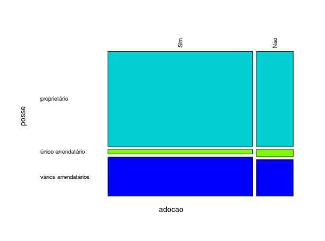
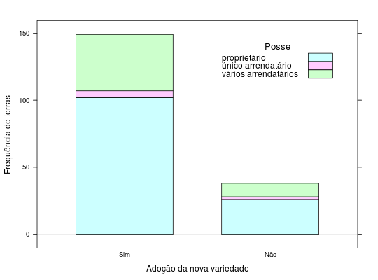

Estudo realizado por um economista agrícola que tem interesse em identificar o comportamento da adoção de uma nova variedade de arroz altamente produtiva segundo a situação de posse de terra.
Um data.frame com 6 observações e 3 variáveis, em que
posseadocaofreqposse e adocao.Andrade, D. F., Ogliari, P. J. (2010). Estatística para as ciências agrárias e biológicas com noções de experimentação (2nd ed.). Florianópolis, SC. Editora da UFSC. (Tabela 2.24, pág. 106)
data(AndradeTb2.24) str(AndradeTb2.24)#> 'data.frame': 6 obs. of 3 variables: #> $ posse : Factor w/ 3 levels "proprietário",..: 1 3 2 1 3 2 #> $ adocao: Factor w/ 2 levels "Sim","Não": 1 1 1 2 2 2 #> $ freq : int 102 42 5 26 10 2xt <- xtabs(freq ~ ., data = AndradeTb2.24) xt#> adocao #> posse Sim Não #> proprietário 102 26 #> único arrendatário 5 2 #> vários arrendatários 42 10prop.table(xt)#> adocao #> posse Sim Não #> proprietário 0.54545455 0.13903743 #> único arrendatário 0.02673797 0.01069519 #> vários arrendatários 0.22459893 0.05347594prop.table(xt, margin = 1)#> adocao #> posse Sim Não #> proprietário 0.7968750 0.2031250 #> único arrendatário 0.7142857 0.2857143 #> vários arrendatários 0.8076923 0.1923077prop.table(xt, margin = 2)#> adocao #> posse Sim Não #> proprietário 0.68456376 0.68421053 #> único arrendatário 0.03355705 0.05263158 #> vários arrendatários 0.28187919 0.26315789mosaicplot(t(xt), col = c("darkturquoise", "lawngreen", "blue"), cex.axis = 0.8, las = 2, main = "")library(lattice) barchart(t(xt), horizontal = FALSE, stack = TRUE, auto.key = list( corner= c(0.9, 0.9), title = "Posse", cex.title = 1.1), xlab = "Adoção da nova variedade", ylab = "Frequência de terras")